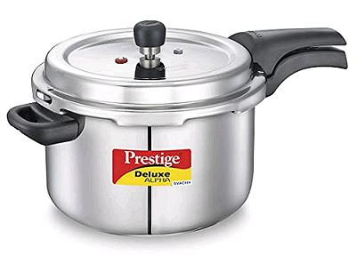
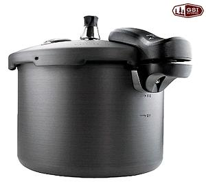

Pressure Cookers
Pressure Cookers can reduce cooking times for many foods, depending on the
pressure they can maintain. 15 psi (pounds per square inch, 1 bar, 100 kPa)
is the highest allowed, but at this pressure food can cook in as little as
25% of the time taken in boiling water.
In 1950, 37% of U.S. households had a pressure cooker, but by 2011 that
had dropped to 20%. Factors were fear of explosion (very unlikely today) and
rise of the Microwave for quick cooking. It is, however, making a come-back
in the form of Multi-Cookers like the
"Instant Pot"®.
In India, Pressure Cookers are very popular. Long cooking beans and similar
foods are extremely important in South Asia, and fuel is scarce and expensive
there. Many Indian recipes just presume you have one and say to cook "to 2
whistles" or "to 3 whistles".
Whistles are no longer a valid measure. They were based on every
urban Indian home having the same two burner stove. Since economic liberation
there are many kinds of stoves in use, and those hotter than the standard
will need more whistles. Timing should be stated as minutes after the first
whistle (full pressure).
Brazilians, with another very bean oriented cuisine, consider a pressure
cooker a household necessity.
The Pressure Cooker pictured here is made in India by Prestige, a brand
very famous for cooking equipment there. They make them in 1.5 Liters to 20
Liters and in aluminum, stainless steel, and stainless steel with induction
bottoms, all available in North America. The one shown is a 6.5 Liter
and sells for around 2020 US $67.25.
More on Stovetop Cookware


Stovetop

Gear

Search
Clovegarden
SAFARI
Users
|
|
|
Caution: Pressure Cookers are sized by full capacity in
Liters or Quarts - but only 2/3 of that capacity can be used for food.
Only 1/2 the capacity can be used for liquids or foods that foam, such
as Rice, and only 1/3 the capacity for Beans Peas and Lentils, because
they foam a lot.
Material: Originally, most home Pressure Cookers were
made of aluminum, but today stainless steel versions are available at
similar prices. Aluminum is subject to corrosion, and acid foods have
to be cooked in a non-reactive container, so we recommend stainless
steel. If you have an induction range, stainless steel units with a
magnetic bottom layer are available.
Camping Pressure Cooker

These are lightweight aluminum units, available in various sizes and
designs. They are somewhat limited in maximum pressure, but are essential
for folks camping at high altitudes, where water boils at so low a
temperature cooking without pressure is impossible. Sherpas use cookers
of this sort in their base camps in the Himalayas.The photo example by
Gsi Outdoors weighs 4-1/2 pounds and holds 5.7 Liters, available for
about 2020 US $48.71.
|
kp_press.html 201121
©Andrew Grygus - agryg@aaxnet.com
Linking and non-commercial use permitted. All images not otherwise
attributed are © cg1.